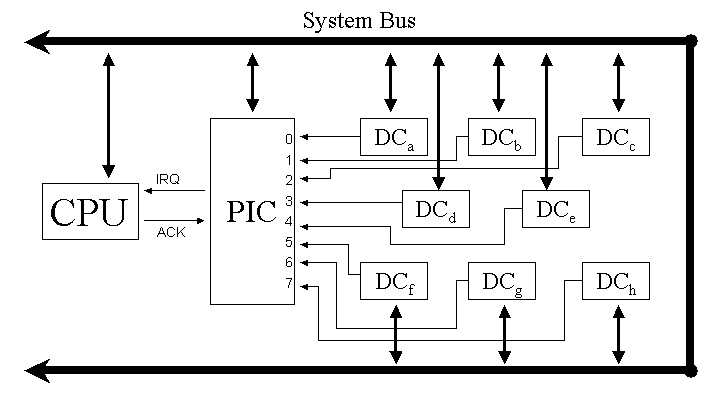

I/O processing involves a complex set of interactions among various hardware and software components. When an application program performs a read or write operation, for example when a Java program calls BufferedReader.readLine(), a C program calls printf() or a C++ program invokes a cout operation, the goal is to transfer some data between an I/O device and a buffer, which could be as simple as a single variable or as complex as a large array of bytes or characters. For an input operation, the application's buffer is filled from another buffer that is managed by the run-time library provided by the language. The run-time library, in turn, obtains the data it needs to satisfy the application's requests from a buffer in the operating system kernel. Inside the kernel, a device driver fills the kernel buffer by reading data as it becomes available from the hardware interface connected to the I/O device, called a device controller.
The UART Page describes the mechanics of transferring data between a device controller and an application buffer in more detail. This page describes the hardware involved in interrupt processing. The model used is the one used by the Intel architecture, but leaves out many details.
For this discussion it doesn't matter whether interrupts are used to signal completion of individual data transfers or to indicate completion of an entire DMA transfer as described in the UART Page.
In this page, we look at interrupt processing from the perspectives of different parts of the I/O system, starting with a device called a Programmable Interrupt Controller, or PIC. Then we'll look at the same thing from the perspective of the CPU.
There are three hardware components involved in interrupt processing, a Device Controller (DC), the CPU, and the Programmable Interrupt Controller (PIC). The nature of the Device Controller and the software that runs on the CPU is described in the UART Page. Our focus here is on the interactions between the DC, PIC, and CPU, and most of these interactions are strictly hardware functions.
Intel processors have one pin that can be used initiate interrupt processing, which is called IRQ (Interrupt ReQuest). The job of the PIC is to assert IRQ on behalf of multiple DCs. Since the purpose of interrupt processing is to allow the CPU to "do other work" while waiting for an I/O transfer to take place, it's entirely possible for several DCs to be operating concurrently, giving rise to simultaneous requests for interrupt processing. The PIC has the job of managing the requests from multiple DCs. Each DC has a separate interrupt request line going to the PIC, as shown in Figure 1.
|  |
Figure 1. Several Device Controllers (DCs) make interrupt requests to a Programmable Interrupt Controller (PIC), which manipulates the CPU's IRQ input pin. The CPU sends an ACK (acknowledge) signal back to the PIC. All other communication between the CPU and the PIC and between the CPU and the DCs takes place over the System Bus. |
Figure 1 shows eight DCs connected to a standard Intel PIC. If more than eight interrupt lines are needed, additional PICs can connected to the inputs of the PIC shown in the figure. A standard PC has two PICs, with one "slave PIC" connected to input number 2 of the "master PIC," for a total of 15 available interrupt lines.
A PIC is "programmable" in the following sense: when the computer first starts running, an initialization program writes command codes to the PIC(s) to tell it (them) how to handle interrupt requests arriving at each of its (their) inputs. (To keep it simple, we'll just talk as if there is only one PIC from now on.) In particular, the PIC is given an 8-bit number to associate with each input line, called that line's interrupt level. In addition, each PIC is told how to handle simultaneous interrupt requests on its various inputs. Options here include assigning a priority ordering among the lines, or having the PIC rotate priorities among the lines for successive requests. The PIC has to be initialized before any interrupt-driven I/O takes place, so the initialization program resides in some non-volatile memory and which is executed automatically when power is applied to the system. This program is called the "Basic I/O System" and is typically stored in flash memory. Once an operating system has been loaded, it may well re-program the PIC(s) to change the priorities and interrupt levels of the input lines.
Once the PIC has been initialized, it's ready to handle interrupt requests from the DCs connected to it. When a DC completes an I/O transfer, it asserts its interrupt request line to the PIC. (Assert means to make the voltage "true".) In response, the PIC asserts the IRQ line to the CPU. Some time later, and we'll discuss what happens during that time interval below, the CPU asserts the ACK line going back to the PIC. In response, the PIC de-asserts IRQ, examines all of its inputs to see how many are true (additional lines may have gone true while waiting for the CPU to respond, for example), and sends the interrupt level number for the highest priority interrupt request at that moment back to the CPU over the system bus. The CPU then processes the interrupt by exchanging information with the DC associated with the interrupt request, which causes the DC to de-assert its signal line to the PIC. Finally, the CPU writes a special code byte called EOI (End of Interrupt) to the PIC over the system bus telling it that the interrupt has been processed. At this point, the PIC examines its input lines and, if any of them are asserted, it asserts the IRQ line to the CPU again.
Now let's look at the same process from the CPU's perspective. We're trying to understand the hardware mechanisms involved, but we really can't avoid referring to the software the CPU executes because it is software that drives much of what the CPU hardware does. But much of what follows describes what the CPU does without fetching and executing any instructions at all. It's just a description of what functions logic circuits in the CPU do, and separate from the operations the CPU performs in fetching and executing instructions. The exceptions below will be when we talk about "the operating system," a "device driver," or "an interrupt service routine." All of those phrases refer to software that the CPU executes using its normal fetch-execute cycle.
First, when the CPU's IRQ input is asserted by the PIC, the CPU has to reach a proper state before acknowledging it. In particular, the following conditions must be true:
Interrupts must be enabled. There is an "interrupt enable" (ie) bit in the CPU's flags register (this register was called the psr in the ARC). There are ISA-level instructions that can turn this bit on or off directly. Also, the CPU saves and restores the flags register as part of its context switch mechanism, which can cause the ie bit to change state. In any event, the CPU ignores the state of the IRQ line whenever the ie bit is false.
The CPU must be between instructions. The idea of an interrupt is for the CPU to interrupt its execution of whatever program is running, to execute the appropriate code to handle the interrupt, and then to resume the execution of the interrupted program, or possibly of some other program that was waiting for the data transfer to complete. The mechanism for interrupting and later resuming a program involves saving the state of the CPU's registers in memory, from which that state information can later be reloaded back into the CPU's registers when it is time to resume the program. Among those CPU registers being saved is the program counter (PC). When the program's state is reloaded into the CPU, the PC supplies the address of the next instruction to be executed, and the CPU starts its fetch-execute cycle at this address in the usual way. The point here is that with very few exceptions, there is no mechanism for interrupting a program any place in the middle of the fetch-execute cycle for an instruction and then to continue processing of that instruction when the program is resumed. Instead, the CPU waits until it has finished executing the instruction it is working on and the PC points to the next instruction to be executed before responding to an IRQ.
An exception to this requirement is a small number of "interruptable" instructions that take a long time to execute, but which can be stopped and resumed because the state needed to do so is kept in one of the registers that is saved in memory. For the Intel architecture, this includes some move instructions, which keep a count of how many bytes remain to be moved in one of the registers.
When the CPU is in an interruptable state and the IRQ line is asserted, the CPU asserts the ACK line to let the PIC know that it is ready to read the interrupt level number from the system bus. The CPU uses the interrupt level as an index into a table of function addresses called the interrupt vector. The functions pointed to by the entries in the interrupt vector are called interrupt service routines (ISRs) or interrupt handlers. These functions are part of the device driver software that must be available for each device controller attached to the system. When the device drivers are loaded into memory, either when the operating system is loaded at system startup or later as "loadable modules," the operating system fills in the interrupt vector with the appropriate addresses. The Intel architecture allows the interrupt vector to start at any address in memory, and has a register in the CPU that the operating system loads with the address it uses so the interrupt hardware can find it. Earlier Intel processors started the interrupt vector at memory location 0.
Once it has the address of the ISR, the CPU goes through a sequence of steps much like those it takes when executing a call instruction: it pushes the program counter onto the stack (the address of the next instruction to execute in the interrupted program), it loads the address of the ISR into the PC, and proceeds to fetch the next instruction, the first instruction of the ISR. In Intel processors, the CPU also pushes the flags register onto the stack and resets the ie bit before executing code from the ISR. It is the job of the ISR to save whatever registers it will modify during its execution, and to read/write whatever DC registers are appropriate. When the ISR is finished processing the interrupt, it writes the EOI code to the PIC, loads whatever register values it saved back into the CPU's registers, and executes an "interrupt return" instruction that pops the flags register and PC off the stack and into their CPU registers. Popping the flag register has the effect of turning the ie bit back on so the next interrupt request from the PIC can be recognized.
You probably noticed that interrupts are disabled while an ISR is executing. Some processors allow a higher priority interrupt request to interrupt a lower priority ISR. But disabling interrupts during ISR execution is the norm, and it is important to make this time interval as brief as possible. For this reason, the ISR typically does a minimal amount of work interacting with the DC, and then signals the operating system to schedule another part of the device driver to do whatever additional processing is necessary, but with interrupts enabled again.